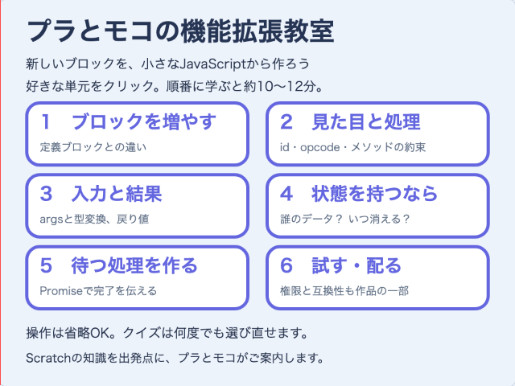

プラとモコのエディター教室
プラとモコの機能拡張教室
TurboWarp互換のJavaScript拡張で、新しいブロックの形、入力、処理の約束を学びます。
紙芝居で試す
約10〜12分。どの単元からでも始められます。解説、クイズ、答えの順に進みます。
- Plus Editorで「ファイル」→「SB3ファイルを開く…」を選びます。
- 実行画面を引出しに表示して緑の旗を押し、単元を選びます。▼が点滅したらステージをクリックすると、文章やセリフが一つずつ進みます。Spaceでも進めます。

完成例は、名前に「さん」を付けるブロックと、最大2秒待って同じ結果を返すブロックです。試すときは別の練習用作品を開き、拡張機能ライブラリの「カスタム拡張機能」から、ダウンロードしたJSファイルをサンドボックス内で読み込みます。
1. ブロックを増やす
Scratchの定義ブロックは作品の中の手順をまとめます。TurboWarp互換の拡張はJavaScriptから、カテゴリや新しいブロックをエディターへ登録できます。
- 定義ブロックと機能拡張は別の仕組み
- 対応するエディタとAPIを確認する
- 小さな一個から作り、動きを確かめる
試すこと 「作品の中の手順に名前をつけたい」と「値を返す新しいブロックを追加したい」の二つで、使う仕組みを考えます。
2. 見た目と処理
getInfo() に拡張の識別子とブロックの形を書きます。opcodeで指定した名前に対応するメソッドが実行時の処理を担当します。
- getInfoはブロックの説明を返す
- opcodeと処理メソッドを対応させる
- 表示文と内部の識別子を区別する
試すこと 完成例の greet を探し、ブロックの表示名、opcode、実行するメソッドを指差します。
3. 入力と結果
ブロックの引数名は、表示文の [NAME]、定義と処理の args.NAME で対応させます。値を返すブロックでは return を使い、想定した型に変換します。
- 引数名を宣言・表示・実装で一致させる
- 結果はreturnで呼ぶ側へ返す
- 入力を必要な型へ変換して扱う
試すこと 完成例で「モコ」、空欄、123を試します。結果が「モコさん」「さん」「123さん」になることを確認します。
4. 状態を持つなら
値をどこに持つかで、どの作品やスプライトが使えるかと、いつ消えるかが決まります。再読み込み後にも残すデータには保存方式が必要です。
- 状態の所有範囲を決める
- 初期化とリセットの動作を設計する
- 作品の保存とJSフィールドを混同しない
試すこと 呼び出し回数を表示する機能を考え、全作品・編集中の作品・スプライトのどこで数えるかと、いつ0に戻すかを決めます。
5. 待つ処理を作る
Promiseを返すと非同期処理の完了を呼び出し元に知らせられます。待ち時間の範囲、失敗時の結果、中断方法を設計すると使い方が分かりやすくなります。
- Promiseで非同期処理の完了を伝える
- 失敗・入力範囲・時間の上限を考える
- 中止と後始末を別に検討する
試すこと 完成例に0秒と3秒を渡して試します。0秒はすぐ結果を返し、3秒を指定しても待ち時間は最大2秒です。